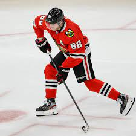
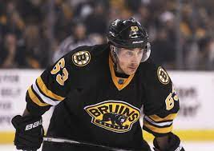
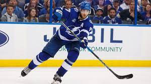

Sidnijs Crosbijs
Sidnijs Krosbijs dzimis 1987. gada 7. augustā Halifaksā, Kanādā ir profesionāls kanādiešu hokejists
spēlē centra uzbrucēja pozīcijā. Pašlaik pārstāv NHL klubu Pitsburgas
"Penguins", pildot arī komandas kapteiņa pienākumus.
Patriks Kane

Patriks Timotijs Keins dzimis 1988. gada 19. novembrī Bufalo, Ņujorkas štatā ir profesionāls amerikāņu hokejists, spēlē malējā
uzbrucēja pozīcijā. Pašlaik pārstāv NHL klubu Čikāgas "Blackhawks".
Nathans Makinons
Aleks Ovečkins
Aleksandrs Ovečkins dzimis 1985. gada 17. septembrī Maskavā ir profesionāls krievu hokejists,
spēlē kreisās malas uzbrucēja pozīcijā Pašlaik pārstāv NHL klubu Vašingtonas Capitals.
Connors Makdeivids
Konors Makdeivids 1997. gada 13. janvārī) ir kanādiešu
hokejists, centra uzbrucējs. Pašlaik 2022 Makdeivids spēlē Nacionālās hokeja līgas klubā Edmontonas "Oilers",
pilda tās kapteiņa funkcijas.
Brads Marčads

Breds Mārčands dzimis 1988. gada 11. maijā ir Kanādas profesionāls hokeja kreisās malas uzbrucējs un Nacionālās hokeja līgas (NHL)
komandas Bostonas Bruins kapteiņa aizstājējs.
Viktors Hedmans

Viktors Ēriks Olofs Hedmens dzimis 1990. gada 18. decembrī ir profesionāls zviedru hokeja aizsargs un
Nacionālās hokeja līgas (NHL) komandas Tampabejas Lightning kapteiņa aizstājējs.
Pernell-Karl Sylvester Subban dzimis 1989. gada 13. maijā ir Kanādas profesionāls hokeja aizsargs, neierobežots brīvais aģents.
Pēdējā laikā viņš spēlēja Nacionālās hokeja līgas NHL komandā Ņūdžersijas "Devils".
Jared bolt

Ostons Metjūss
Ostons Metjūss dzimis 1997. gada 17. septembrī ir amerikāņu hokejists, centra uzbrucējs. Pašlaik (2022)
Metjūss spēlē Nacionālās hokeja līgas kluba Toronto "Maple Leafs" rindās.
Šie ir top 10 spēlētāji pēc manām domām
Sveiki esmu Reinards Ķempelis Mācos j4v, kā ari spēlēju hokeju!